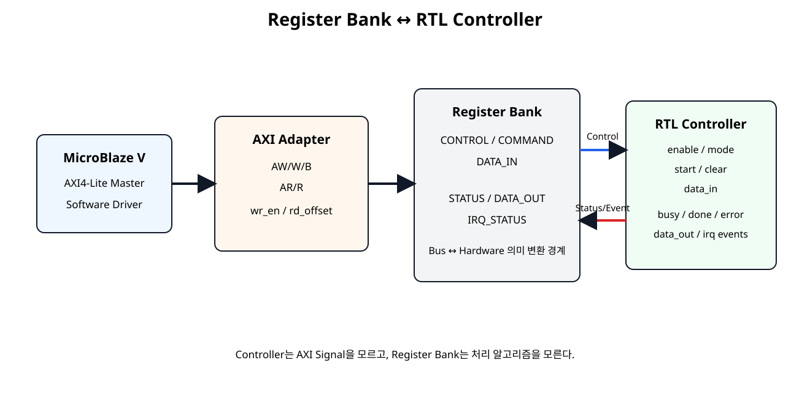
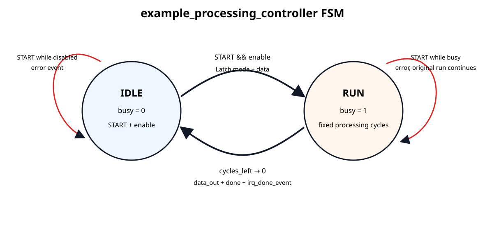
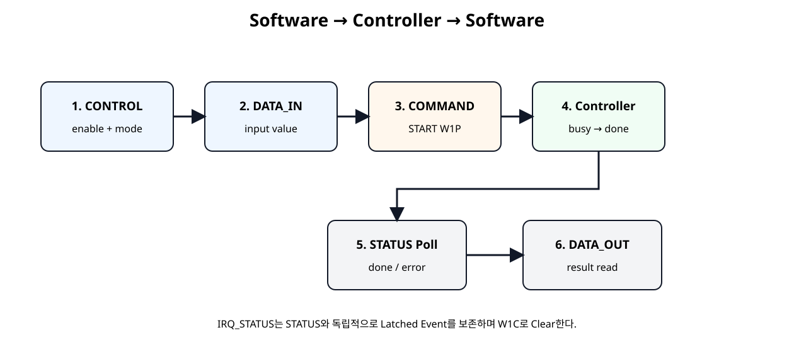

Software → Hardware
ENABLE, MODE, START, CLEAR, DATA_IN을 Controller 입력으로 전달한다.
Basys3 SoC + NPU · SoC 14
SoC 11~13에서 만든 AXI4-Lite Register 구조를 실제 RTL Controller에 연결한다. Software가 CONTROL, COMMAND, DATA_IN을 쓰면 Controller가 동작하고, Controller의 BUSY, DONE, ERROR, DATA_OUT, IRQ Event가 다시 STATUS와 IRQ_STATUS Register로 돌아오는 Hardware/Software 제어 루프를 완성한다.
ENABLE, MODE, START, CLEAR, DATA_IN을 Controller 입력으로 전달한다.
BUSY, DONE, ERROR, DATA_OUT과 Event를 Register로 되돌린다.
AXI, Register Bank, Controller를 독립 모듈로 유지한다.
이번 장에서 처음으로 Custom AXI IP의 Register가 실제 기능 RTL을 제어한다. AXI Protocol 자체나 Register Map은 바꾸지 않고, Hardware-side Interface에 Controller를 연결한다.

Controller는 AXI의 AW/W/B/AR/R Signal을 전혀 알지 못하고, Register Bank가 제공하는 일반 Control/Status Signal만 사용한다.
| Software Register | Hardware Signal | 방향 |
|---|---|---|
| CONTROL.ENABLE | enable_o | SW → HW |
| CONTROL.MODE | mode_o[1:0] | SW → HW |
| COMMAND.START | start_pulse_o | SW → HW |
| COMMAND.CLEAR | clear_pulse_o | SW → HW |
| DATA_IN | data_in_o[31:0] | SW → HW |
| STATUS.BUSY | busy_i | HW → SW |
| STATUS.DONE | done_i | HW → SW |
| STATUS.ERROR | error_i | HW → SW |
| DATA_OUT | data_out_i[31:0] | HW → SW |
| IRQ_STATUS | irq_*_event_i | HW Event → SW Latched |
| 출발 신호 | 도착 신호 |
|---|---|
| Register Bank / enable_o | Controller / enable_i |
| Register Bank / mode_o[1:0] | Controller / mode_i[1:0] |
| Register Bank / start_pulse_o | Controller / start_pulse_i |
| Register Bank / clear_pulse_o | Controller / clear_pulse_i |
| Register Bank / data_in_o | Controller / data_in_i |
| Controller / busy_o | Register Bank / busy_i |
| Controller / done_o | Register Bank / done_i |
| Controller / error_o | Register Bank / error_i |
| Controller / data_out_o | Register Bank / data_out_i |
| Controller / irq_done_event_o | Register Bank / irq_done_event_i |
| Controller / irq_error_event_o | Register Bank / irq_error_event_i |
example_processing_controller는 Register/Controller 연결을 눈으로 확인하기 위한 교육용 기능이다. 특정 응용에 종속되지 않는다.
| MODE | 처리 | 예 |
|---|---|---|
00 | Pass-through | 0x1234 → 0x1234 |
01 | Input + 1 | 0x00000009 → 0x0000000A |
10 | Left Shift 1 | 0x00000003 → 0x00000006 |
11 | Bitwise NOT | 0xA5A55A5A → 0x5A5AA5A5 |

START를 받으면 MODE와 DATA_IN을 Capture하고 RUN으로 이동한다. 고정 처리 Cycle 후 결과를 DATA_OUT에 저장하고 DONE Event를 발생시킨다.
mode_latched <= mode_i;
data_latched <= data_in_i;
busy_o <= 1'b1;
state <= STATE_RUN;작업이 시작된 이후 Software가 CONTROL 또는 DATA_IN Register를 바꾸더라도 현재 작업은 START 시점에 Capture한 값으로 계속 진행한다.
| Status | 의미 | 유지 방식 |
|---|---|---|
busy_o | 현재 처리 중 | RUN 동안 1 |
done_o | 마지막 작업 완료 | 완료 후 1, CLEAR까지 유지 |
error_o | 잘못된 START 발생 | Error 발생 후 1, CLEAR까지 유지 |
Software가 Controller를 Enable하지 않고 START를 실행한 경우를 잘못된 명령으로 처리한다.
새 START가 기존 작업을 강제로 취소하지 않는다. Error는 기록하지만 원래 작업은 끝까지 수행한다.
COMMAND[1]은 W1P(Write 1 to Pulse, 1을 쓰면 1 Clock Pulse)이며 Controller의 retained Status를 지운다.
if (clear_pulse_i) begin
done_o <= 1'b0;
error_o <= 1'b0;
endCLEAR는 진행 중인 RUN을 Abort하지 않는다. BUSY 상태는 현재 작업이 끝날 때까지 유지된다.
Controller의 Event는 1 Clock Pulse지만 Register Bank가 IRQ_STATUS에 저장하므로 Software가 나중에 읽어도 Event를 확인할 수 있다.
| 구분 | STATUS | IRQ_STATUS |
|---|---|---|
| 의미 | Controller의 현재/최근 상태 | 발생한 Event 기록 |
| Source | busy/done/error Level | done/error Event Pulse |
| Clear | COMMAND.CLEAR | W1C Write |
| 목적 | 현재 작업 상태 확인 | Event 놓치지 않기 |
custom_axi4lite_controller_ip.v는 AXI/Register Module과 Controller Module을 연결하는 최상위 Wrapper이다.
module custom_axi4lite_controller_ip #(
parameter integer C_S_AXI_ADDR_WIDTH = 32,
parameter integer PROCESS_CYCLES = 4
)(
input wire s_axi_aclk,
input wire s_axi_aresetn,
input wire [C_S_AXI_ADDR_WIDTH-1:0] s_axi_awaddr,
input wire [2:0] s_axi_awprot,
input wire s_axi_awvalid,
output wire s_axi_awready,
input wire [31:0] s_axi_wdata,
input wire [3:0] s_axi_wstrb,
input wire s_axi_wvalid,
output wire s_axi_wready,
output wire [1:0] s_axi_bresp,
output wire s_axi_bvalid,
input wire s_axi_bready,
input wire [C_S_AXI_ADDR_WIDTH-1:0] s_axi_araddr,
input wire [2:0] s_axi_arprot,
input wire s_axi_arvalid,
output wire s_axi_arready,
output wire [31:0] s_axi_rdata,
output wire [1:0] s_axi_rresp,
output wire s_axi_rvalid,
input wire s_axi_rready
);
// Shell / Wrapper principle:
// - AXI/Register behavior stays in custom_axi4lite_ip.
// - Functional processing stays in example_processing_controller.
// - This module contains only wires and module connections.
wire enable;
wire [1:0] mode;
wire start_pulse;
wire clear_pulse;
wire [31:0] data_in;
wire [1:0] irq_status;
wire busy;
wire done;
wire error;
wire irq_done_event;
wire irq_error_event;
wire [31:0] data_out;
custom_axi4lite_ip #(
.C_S_AXI_ADDR_WIDTH(C_S_AXI_ADDR_WIDTH)
) u_custom_axi4lite_ip (
.s_axi_aclk(s_axi_aclk),
.s_axi_aresetn(s_axi_aresetn),
.s_axi_awaddr(s_axi_awaddr),
.s_axi_awprot(s_axi_awprot),
.s_axi_awvalid(s_axi_awvalid),
.s_axi_awready(s_axi_awready),
.s_axi_wdata(s_axi_wdata),
.s_axi_wstrb(s_axi_wstrb),
.s_axi_wvalid(s_axi_wvalid),
.s_axi_wready(s_axi_wready),
.s_axi_bresp(s_axi_bresp),
.s_axi_bvalid(s_axi_bvalid),
.s_axi_bready(s_axi_bready),
.s_axi_araddr(s_axi_araddr),
.s_axi_arprot(s_axi_arprot),
.s_axi_arvalid(s_axi_arvalid),
.s_axi_arready(s_axi_arready),
.s_axi_rdata(s_axi_rdata),
.s_axi_rresp(s_axi_rresp),
.s_axi_rvalid(s_axi_rvalid),
.s_axi_rready(s_axi_rready),
.busy_i(busy),
.done_i(done),
.error_i(error),
.irq_done_event_i(irq_done_event),
.irq_error_event_i(irq_error_event),
.data_out_i(data_out),
.enable_o(enable),
.mode_o(mode),
.start_pulse_o(start_pulse),
.clear_pulse_o(clear_pulse),
.data_in_o(data_in),
.irq_status_o(irq_status)
);
example_processing_controller #(
.PROCESS_CYCLES(PROCESS_CYCLES)
) u_example_processing_controller (
.clk(s_axi_aclk),
.resetn(s_axi_aresetn),
.enable_i(enable),
.mode_i(mode),
.start_pulse_i(start_pulse),
.clear_pulse_i(clear_pulse),
.data_in_i(data_in),
.busy_o(busy),
.done_o(done),
.error_o(error),
.irq_done_event_o(irq_done_event),
.irq_error_event_o(irq_error_event),
.data_out_o(data_out)
);
endmodule
| 허용 | 배치하지 않음 |
|---|---|
| Wire 선언 | always Block |
| Module Instance | FSM |
| Port Connection | 산술 연산 |
| Parameter 전달 | Register 정책 |
기능은 Controller, Bus/Register 동작은 기존 AXI/Register Module에 남긴다.
다음 Controller는 AXI Signal이나 Register Address를 전혀 사용하지 않는다.
module example_processing_controller #(
parameter integer PROCESS_CYCLES = 4
)(
input wire clk,
input wire resetn,
// Register-bank control inputs
input wire enable_i,
input wire [1:0] mode_i,
input wire start_pulse_i,
input wire clear_pulse_i,
input wire [31:0] data_in_i,
// Register-bank status / event outputs
output reg busy_o,
output reg done_o,
output reg error_o,
output reg irq_done_event_o,
output reg irq_error_event_o,
output reg [31:0] data_out_o
);
localparam STATE_IDLE = 1'b0;
localparam STATE_RUN = 1'b1;
reg state;
reg [7:0] cycles_left;
reg [1:0] mode_latched;
reg [31:0] data_latched;
function [31:0] process_value;
input [31:0] value;
input [1:0] mode;
begin
case (mode)
2'b00: process_value = value; // Pass-through
2'b01: process_value = value + 32'd1; // Add 1
2'b10: process_value = value << 1; // Shift left 1
2'b11: process_value = ~value; // Bitwise NOT
default: process_value = value;
endcase
end
endfunction
always @(posedge clk) begin
if (!resetn) begin
state <= STATE_IDLE;
cycles_left <= 8'd0;
mode_latched <= 2'b00;
data_latched <= 32'h0000_0000;
busy_o <= 1'b0;
done_o <= 1'b0;
error_o <= 1'b0;
irq_done_event_o <= 1'b0;
irq_error_event_o <= 1'b0;
data_out_o <= 32'h0000_0000;
end else begin
// Event outputs are one-clock pulses by default.
irq_done_event_o <= 1'b0;
irq_error_event_o <= 1'b0;
// Software CLEAR removes retained status only.
// A new hardware event later in this clock may set status again.
if (clear_pulse_i) begin
done_o <= 1'b0;
error_o <= 1'b0;
end
case (state)
STATE_IDLE: begin
busy_o <= 1'b0;
if (start_pulse_i) begin
done_o <= 1'b0;
if (!enable_i) begin
// Start requested while the controller is disabled.
error_o <= 1'b1;
irq_error_event_o <= 1'b1;
end else begin
// Capture software-controlled values only at START.
mode_latched <= mode_i;
data_latched <= data_in_i;
busy_o <= 1'b1;
error_o <= 1'b0;
if (PROCESS_CYCLES <= 1) begin
cycles_left <= 8'd0;
end else begin
cycles_left <= PROCESS_CYCLES - 1;
end
state <= STATE_RUN;
end
end
end
STATE_RUN: begin
busy_o <= 1'b1;
// A second START while busy is an error event.
// The original operation continues.
if (start_pulse_i) begin
error_o <= 1'b1;
irq_error_event_o <= 1'b1;
end
if (cycles_left != 0) begin
cycles_left <= cycles_left - 1'b1;
end else begin
data_out_o <= process_value(data_latched, mode_latched);
busy_o <= 1'b0;
done_o <= 1'b1;
irq_done_event_o <= 1'b1;
state <= STATE_IDLE;
end
end
default: begin
state <= STATE_IDLE;
busy_o <= 1'b0;
end
endcase
end
end
endmodule

다음 함수는 실제 Base Address를 호출자가 전달받아 Controller를 실행한다. Base Address를 소스에 임의로 고정하지 않는다.
#include "custom_regmap.h"
#include "xstatus.h"
#include "xil_types.h"
/*
* SoC 14 - Register Bank + RTL Controller software demo
*
* Hardware operation modes:
* mode 0 : pass-through
* mode 1 : input + 1
* mode 2 : input << 1
* mode 3 : bitwise NOT
*
* BaseAddress is supplied by the caller.
*/
#define CUSTOM_POLL_LIMIT 1000000U
static void Custom_ClearStatusAndIrq(UINTPTR BaseAddress)
{
/* COMMAND.CLEAR clears controller done/error status. */
Custom_WriteReg(
BaseAddress,
CUSTOM_COMMAND_OFFSET,
CUSTOM_COMMAND_CLEAR_MASK
);
/* IRQ_STATUS is independent and must be cleared by W1C. */
Custom_WriteReg(
BaseAddress,
CUSTOM_IRQ_STATUS_OFFSET,
CUSTOM_IRQ_DONE_MASK | CUSTOM_IRQ_ERROR_MASK
);
}
int Custom_RunOperation(
UINTPTR BaseAddress,
u32 Mode,
u32 InputValue,
u32 *OutputValue
)
{
u32 poll_count;
u32 status;
if (OutputValue == 0) {
return XST_FAILURE;
}
Custom_ClearStatusAndIrq(BaseAddress);
Custom_SetEnable(BaseAddress, 1U);
Custom_SetMode(BaseAddress, Mode);
Custom_WriteReg(
BaseAddress,
CUSTOM_DATA_IN_OFFSET,
InputValue
);
Custom_Start(BaseAddress);
for (poll_count = 0U;
poll_count < CUSTOM_POLL_LIMIT;
poll_count++) {
status = Custom_ReadReg(
BaseAddress,
CUSTOM_STATUS_OFFSET
);
if ((status & CUSTOM_STATUS_ERROR_MASK) != 0U) {
return XST_FAILURE;
}
if ((status & CUSTOM_STATUS_DONE_MASK) != 0U) {
*OutputValue = Custom_ReadReg(
BaseAddress,
CUSTOM_DATA_OUT_OFFSET
);
/* Clear retained controller status and DONE IRQ. */
Custom_WriteReg(
BaseAddress,
CUSTOM_COMMAND_OFFSET,
CUSTOM_COMMAND_CLEAR_MASK
);
Custom_ClearDoneIrq(BaseAddress);
return XST_SUCCESS;
}
}
return XST_FAILURE;
}
32-bit 결과만 유지하므로 Overflow는 Wrap-around 된다.
왼쪽으로 밀려 나간 최상위 Bit는 저장하지 않는다.
Testbench는 AXI Register Transaction을 통해 Controller를 구동한다. Controller Port를 Testbench에서 직접 찌르지 않는다.
`timescale 1ns / 1ps
module tb_custom_axi4lite_controller_ip;
localparam integer ADDR_W = 32;
localparam integer PROCESS_CYCLES_TB = 12;
reg clk = 1'b0;
reg resetn = 1'b0;
always #5 clk = ~clk;
reg [ADDR_W-1:0] awaddr;
reg [2:0] awprot;
reg awvalid;
wire awready;
reg [31:0] wdata;
reg [3:0] wstrb;
reg wvalid;
wire wready;
wire [1:0] bresp;
wire bvalid;
reg bready;
reg [ADDR_W-1:0] araddr;
reg [2:0] arprot;
reg arvalid;
wire arready;
wire [31:0] rdata;
wire [1:0] rresp;
wire rvalid;
reg rready;
integer error_count = 0;
reg [31:0] rd;
custom_axi4lite_controller_ip #(
.C_S_AXI_ADDR_WIDTH(ADDR_W),
.PROCESS_CYCLES(PROCESS_CYCLES_TB)
) dut (
.s_axi_aclk(clk),
.s_axi_aresetn(resetn),
.s_axi_awaddr(awaddr),
.s_axi_awprot(awprot),
.s_axi_awvalid(awvalid),
.s_axi_awready(awready),
.s_axi_wdata(wdata),
.s_axi_wstrb(wstrb),
.s_axi_wvalid(wvalid),
.s_axi_wready(wready),
.s_axi_bresp(bresp),
.s_axi_bvalid(bvalid),
.s_axi_bready(bready),
.s_axi_araddr(araddr),
.s_axi_arprot(arprot),
.s_axi_arvalid(arvalid),
.s_axi_arready(arready),
.s_axi_rdata(rdata),
.s_axi_rresp(rresp),
.s_axi_rvalid(rvalid),
.s_axi_rready(rready)
);
task automatic expect32;
input [31:0] actual;
input [31:0] expected;
input [8*48-1:0] label;
begin
if (actual !== expected) begin
$display("FAIL: %0s actual=%08h expected=%08h",
label, actual, expected);
error_count = error_count + 1;
end else begin
$display("PASS: %0s = %08h", label, actual);
end
end
endtask
task automatic axi_write;
input [31:0] addr;
input [31:0] data;
input [3:0] strb;
begin
@(negedge clk);
awaddr = addr;
awvalid = 1'b1;
wait (awready === 1'b1);
@(negedge clk);
awvalid = 1'b0;
@(negedge clk);
wdata = data;
wstrb = strb;
wvalid = 1'b1;
wait (wready === 1'b1);
@(negedge clk);
wvalid = 1'b0;
bready = 1'b1;
wait (bvalid === 1'b1);
@(posedge clk);
@(negedge clk);
bready = 1'b0;
end
endtask
task automatic axi_read;
input [31:0] addr;
output [31:0] data;
begin
@(negedge clk);
araddr = addr;
arvalid = 1'b1;
wait (arready === 1'b1);
@(negedge clk);
arvalid = 1'b0;
rready = 1'b1;
wait (rvalid === 1'b1);
data = rdata;
@(posedge clk);
@(negedge clk);
rready = 1'b0;
end
endtask
task automatic clear_status_and_irq;
begin
axi_write(32'h00000008, 32'h00000002, 4'b0001);
axi_write(32'h0000000C, 32'h00000003, 4'b0001);
end
endtask
task automatic wait_done;
output [31:0] status_value;
integer k;
reg found;
begin
status_value = 32'h0;
found = 1'b0;
for (k = 0; k < 100; k = k + 1) begin
axi_read(32'h00000004, status_value);
if (status_value[1]) begin
found = 1'b1;
k = 100;
end
end
if (!found) begin
$display("FAIL: timeout waiting for DONE");
error_count = error_count + 1;
end
end
endtask
task automatic run_mode_test;
input [1:0] mode;
input [31:0] input_value;
input [31:0] expected_value;
reg [31:0] status_value;
reg [31:0] control_value;
begin
clear_status_and_irq();
control_value = 32'h00000001 | ({30'h0, mode} << 1);
axi_write(32'h00000000, control_value, 4'b1111);
axi_write(32'h00000010, input_value, 4'b1111);
axi_write(32'h00000008, 32'h00000001, 4'b0001);
wait_done(status_value);
if (!status_value[1] || status_value[0]) begin
$display("FAIL: final STATUS expected DONE=1 BUSY=0");
error_count = error_count + 1;
end
axi_read(32'h00000014, rd);
expect32(rd, expected_value, "DATA_OUT result");
axi_read(32'h0000000C, rd);
if ((rd & 32'h00000001) == 0) begin
$display("FAIL: DONE IRQ status not latched");
error_count = error_count + 1;
end else begin
$display("PASS: DONE IRQ status latched");
end
end
endtask
initial begin
awaddr = 0;
awprot = 0;
awvalid = 0;
wdata = 0;
wstrb = 0;
wvalid = 0;
bready = 0;
araddr = 0;
arprot = 0;
arvalid = 0;
rready = 0;
repeat (5) @(posedge clk);
resetn = 1'b1;
repeat (3) @(posedge clk);
$display("---- FIXED REGISTERS ----");
axi_read(32'h00000018, rd);
expect32(rd, 32'h00010000, "VERSION");
axi_read(32'h0000001C, rd);
expect32(rd, 32'h524D4150, "ID");
$display("---- DISABLED START -> ERROR ----");
axi_write(32'h00000008, 32'h00000001, 4'b0001);
repeat (3) @(posedge clk);
axi_read(32'h00000004, rd);
if ((rd & 32'h00000004) == 0) begin
$display("FAIL: STATUS.ERROR not set");
error_count = error_count + 1;
end else begin
$display("PASS: STATUS.ERROR set");
end
axi_read(32'h0000000C, rd);
if ((rd & 32'h00000002) == 0) begin
$display("FAIL: IRQ_STATUS.ERROR not set");
error_count = error_count + 1;
end else begin
$display("PASS: IRQ_STATUS.ERROR set");
end
$display("---- CLEAR STATUS ONLY ----");
axi_write(32'h00000008, 32'h00000002, 4'b0001);
axi_read(32'h00000004, rd);
expect32(rd, 32'h00000000, "STATUS after COMMAND.CLEAR");
axi_read(32'h0000000C, rd);
expect32(rd, 32'h00000002, "IRQ_STATUS remains latched");
axi_write(32'h0000000C, 32'h00000002, 4'b0001);
axi_read(32'h0000000C, rd);
expect32(rd, 32'h00000000, "IRQ_STATUS W1C clear");
$display("---- MODE 0 PASS-THROUGH ----");
run_mode_test(2'b00, 32'h12345678, 32'h12345678);
$display("---- MODE 1 ADD 1 ----");
run_mode_test(2'b01, 32'hFFFFFFFF, 32'h00000000);
$display("---- MODE 2 SHIFT LEFT ----");
run_mode_test(2'b10, 32'h80000001, 32'h00000002);
$display("---- MODE 3 BITWISE NOT ----");
run_mode_test(2'b11, 32'hA5A55A5A, 32'h5A5AA5A5);
$display("---- START WHILE BUSY -> ERROR ----");
clear_status_and_irq();
// Enable, mode 0, data input.
axi_write(32'h00000000, 32'h00000001, 4'b1111);
axi_write(32'h00000010, 32'hCAFEBABE, 4'b1111);
// First START launches the operation.
axi_write(32'h00000008, 32'h00000001, 4'b0001);
// Second START arrives before PROCESS_CYCLES_TB expires.
axi_write(32'h00000008, 32'h00000001, 4'b0001);
wait_done(rd);
axi_read(32'h00000004, rd);
if ((rd & 32'h00000004) == 0) begin
$display("FAIL: busy restart ERROR not retained");
error_count = error_count + 1;
end else begin
$display("PASS: busy restart ERROR retained");
end
axi_read(32'h00000014, rd);
expect32(rd, 32'hCAFEBABE, "original operation still completed");
axi_read(32'h0000000C, rd);
if ((rd & 32'h00000003) != 32'h00000003) begin
$display("FAIL: DONE+ERROR IRQ status expected");
error_count = error_count + 1;
end else begin
$display("PASS: DONE+ERROR IRQ status latched");
end
if (error_count == 0) begin
$display("SOC14 REGISTER BANK + CONTROLLER TEST: PASS");
end else begin
$display("SOC14 REGISTER BANK + CONTROLLER TEST: FAIL (%0d errors)",
error_count);
end
#50;
$finish;
end
endmodule
| 시험 | 기대 결과 |
|---|---|
| VERSION / ID Read | 고정 RO 값 |
| Disabled START | STATUS.ERROR + IRQ_STATUS.ERROR |
| COMMAND.CLEAR | STATUS만 Clear |
| IRQ_STATUS W1C | Latched IRQ 별도 Clear |
| Mode 0 | Pass-through |
| Mode 1 | +1, 32-bit Wrap |
| Mode 2 | Left Shift 1 |
| Mode 3 | Bitwise NOT |
| Busy 중 START | Error 기록 + 원 작업 정상 완료 |
| DONE Event | IRQ_STATUS.DONE Latched |
| 구간 | 신호 | 확인 |
|---|---|---|
| 설정 | enable, mode, data_in | Register Write 값 유지 |
| 시작 | start_pulse | 정확히 1 Clock |
| 처리 | busy | RUN 동안 1 |
| 완료 | done | 완료 후 CLEAR까지 유지 |
| Event | irq_done_event | 완료 시 1 Clock |
| 결과 | data_out | MODE별 예상값 |
| 오류 | error | Disabled/Busy START에서 1 |
| 증상 | 원인 후보 | 확인 |
|---|---|---|
| START 후 아무 변화 없음 | ENABLE=0 | CONTROL.ENABLE 확인 |
| START가 여러 Cycle 유지 | COMMAND를 일반 RW로 구현 | W1P Pulse 구조 확인 |
| DATA_IN 변경이 작업 중 결과를 바꿈 | START 시 Capture하지 않음 | data_latched 확인 |
| DONE이 즉시 사라짐 | Pulse로만 구현 | DONE은 CLEAR까지 retained |
| STATUS Clear 후 IRQ도 사라짐 | 상태와 Event History를 혼합 | IRQ_STATUS는 별도 W1C |
| Busy 중 두 번째 START가 원 작업을 취소 | 정책 오류 | Error만 기록, RUN 계속 |
| Wrapper에 FSM/연산이 있음 | 모듈 역할 혼합 | Wrapper는 Connection만 유지 |
| 문서 | 확인 항목 |
|---|---|
| AMD UG1118 · Creating a New AXI4 Peripheral · 2026.1 | AXI4 Peripheral 생성 후 Custom Logic 추가와 Register Read/Write 검증 흐름 |
| AMD UG1118 · Supported IP Packager Inputs · 2026.1 | HDL Synthesis, Simulation, Testbench, Driver 등 Custom IP File Group 지원 |
| AMD/Xilinx embeddedsw · xil_io.h | Software Memory-Mapped Register Access 기반 |